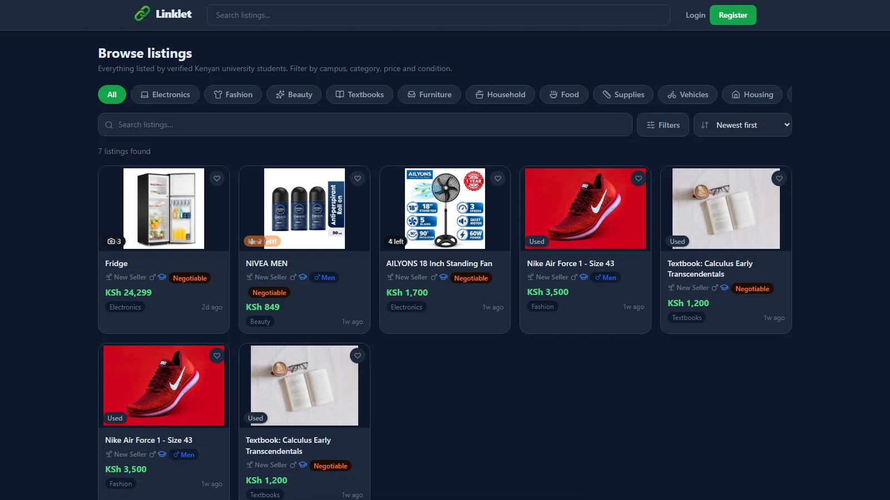
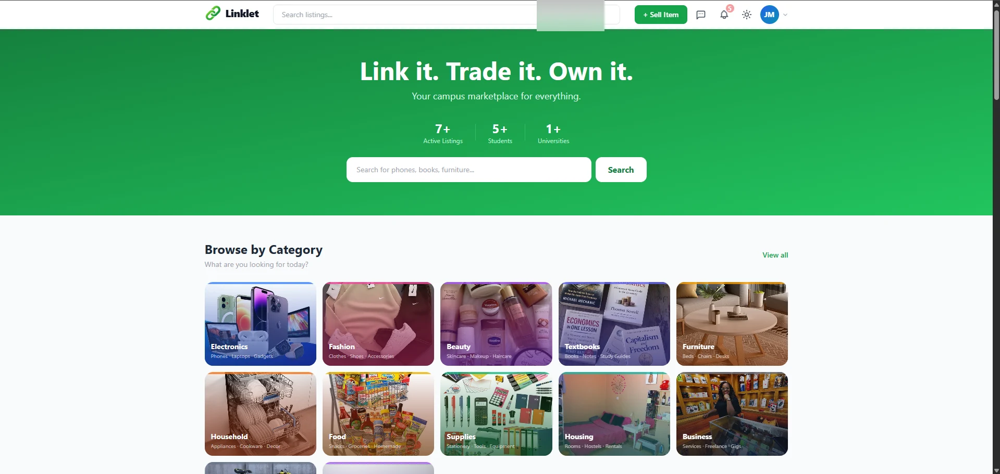
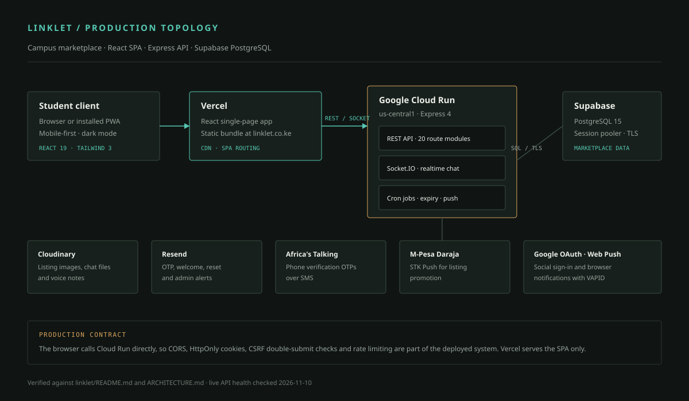

Marketplace platformLive
Linklet
A campus marketplace for Kenyan university students, with verified accounts, searchable listings, real-time messaging, offers, ratings, and admin tools.

The constraint
Campus commerce was scattered across group chats and noticeboards.
Students at Kenyan universities buy, sell, and trade constantly, but the tools they use were not built for it. Listings disappear in WhatsApp groups. There is no reliable way to know whether the person on the other side is a student. Search is whatever the group admin remembers. A meetup is arranged in a private message and then forgotten.
Linklet had to solve three problems at once: make discovery local and searchable, make identity visible enough to trust, and make the handoff conversation possible without leaving the product. It also had to work on a phone, on a student data bundle, without a desktop.
The system
A marketplace and a messaging product, not a listing board.
Linklet is a React single-page application backed by an Express API. The browser talks to the API directly, with HttpOnly cookies, CSRF protection, and CORS as part of the production contract. The frontend is served from Vercel; the API and Socket.IO server run on Google Cloud Run. PostgreSQL lives on Supabase, accessed through the session pooler over TLS.
That separation is deliberate. The marketplace has long-lived data and short-lived events. Listings, profiles, offers, and payments belong in PostgreSQL. Messages, unread counts, and live notifications belong on a socket. Keeping the API stateless enough to run on Cloud Run made deployment repeatable, but it also meant the realtime path needed a fallback when a WebSocket could not be established.


What it does
The features that carry the product
- Student accounts. Email and password, Google sign-in, email OTP, phone OTP, optional two-factor authentication, and student verification.
- Listings that behave like listings. Images, categories, condition, location, quantity, negotiation, university targeting, saved items, trending items, recently sold items, and recommendations.
- Search and filters. Campus, category, price, and condition filtering across the inventory.
- Buyer and seller profiles. Ratings, response-rate badges, and verification state.
- Messaging built for a transaction. Text, images, documents, voice notes, replies, reactions, blocking, and unread counts.
- Offers and completion. Offers, purchase confirmations, and ratings on both sides.
- Listing promotion. M-Pesa Daraja STK Push is integrated for promoting a listing.
- Admin tools. Users, listings, reports, payments, student verification, growth statistics, and maintenance settings.
- Installable PWA. Offline handling, dark mode, mobile navigation, and web push notifications.
Decisions that mattered
What made it more than a CRUD app
- Realtime with a fallback
- Socket.IO handles live messages and notifications. The socket auth path prefers polling and then upgrades to a WebSocket. That change made reconnects more reliable on the deployed backend, where a cold start or a proxy can interrupt a long-lived connection.
- Migrations that run at boot
- The schema is not a manual step. Idempotent migrations run before the API accepts requests, and the baseline schema remains a reference. It means a fresh environment can come up without a separate database ceremony.
- Auth cookies that survive the split
- The frontend and API are on different hosts. The production setup uses HttpOnly cookies, a CSRF double-submit cookie, and explicit CORS. That is more work than a bearer token in local storage, and it is the right trade for a marketplace with account and payment surfaces.
- The maintenance-mode lockout
- A maintenance-mode bypass and the optional-auth path did not read the same cookie token. Admins could be locked out of the very screen they needed. The fix made the maintenance check read the same token as the rest of the auth path and wired CSRF into the flow. It is the kind of bug that only appears when two reasonable subsystems meet.
- Payments as a narrow surface
- M-Pesa is used for listing promotion, not as a general wallet. Keeping the payment surface narrow made the callback handling and the failure states easier to reason about. The integration is implemented; the case file does not claim payment volume or business results.
What I built
Product, full stack, deployment
I founded Linklet and built the product across the frontend, API, database, and deployment. That included the data model, the listing and messaging flows, the admin surface, the integrations, and the production configuration. I also handled the domain and the operating details that make a deployed product feel real.
The engineering work was not only feature delivery. It was learning where the system was fragile: a socket that dropped, a migration that had to be safe to rerun, an admin route that depended on the order in which auth loaded. Those are the parts that turn a codebase into a product.
Evidence
The public marketplace
Authenticated screenshots of chat and admin flows are being prepared. They are not shown until the data in them has been checked and blurred.
Status
Live, and still being hardened
Live
The marketplace is live at linklet.co.ke. The core flows are implemented: accounts, listings, search, messaging, offers, ratings, admin tools, and the PWA shell.
What this case file does not claim: user numbers, revenue, processed payment volume, or retention. Those are business metrics, not engineering evidence.
Next
What comes after the first version
The next product work is broader listing categories and business advertising. Those are future plans, not shipped features. The engineering work continues on the less visible parts: keeping the realtime path reliable, tightening moderation and admin flows, and making the mobile experience hold up on the connections students actually have.